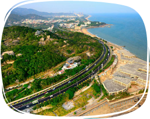

-

依山繞水觀海長廊@環島路
更多資訊Go當初建造的宗旨非常貼心─「把最美的沙灘留給百姓」環島路的美，美在自然和諧，依山繞水，碧海白沙，一望無際。 綠草坪，棕櫚林，亞熱帶氣息迎面撲鼻，整條道路充滿了熱帶小島的自然清新。
-
世界現存最大海岸炮@胡里山炮台
更多資訊Go胡里山炮台是一座建於清光緒二十年（1894年）的古炮台，為世界現存最大的海岸炮。 歷史上曾經是廈門人民抗擊帝國主義侵略者的古戰場。炮台分東西兩座，是從德國克虜伯兵工廠購進的。
-
莊嚴肅穆靜心祈福@南普陀寺
更多資訊Go南普陀寺以奉觀音菩薩為主，又位在我國四大佛教道場之一的浙江舟山普陀山之南，故稱南普陀寺。 建築規模宏大，依傍山勢，層層托高，莊嚴肅穆。並富有南亞佛教建築的風格，使南普陀寺風景更加美麗。
-
絕美天籟音樂之島@鼓浪嶼
更多資訊Go 達人推薦許傑碧海環抱中的鼓浪嶼，島上山巒叠翠，峰岩跌宕，大自然鬼斧神工造就了鼓浪嶼明麗隽永的海島風光，主要景點有日光岩、菽莊花園、皓月園。 另外，鼓浪嶼的人均鋼琴擁有率爲全國第一，有音樂之島美稱。
-
擁抱大片海灘的最美校園@廈門-廈門大學
更多資訊Go廈門大學依山傍水、風光秀麗，是著名愛國華僑領袖陳嘉庚所創辦。 距離校門口幾十米，就有一座白城沙灘，海浪濤聲伴隨著讀書聲，下課後散步、游泳還能觀賞到絕美夕陽。
-
廈門人看戲夜生活@廈門-閩南神韻
更多資訊Go廈門的夜生活，多了一項新選擇。入夜後，廈門上演了一齣以閩南民俗風情詩畫為主題的大型表演《閩南神韻》， 融合了閩南文化與海洋文化精華，還有南音、搏餅、木偶戲、戲醜、南少林、惠安女、鄭成功等元素。
-
似曾相似翻版廈門西門町@廈門 中山路步行街
更多資訊Go 達人推薦許傑台灣有千百條中山路，而來到廈門也有一條中山路，這條街的型態像極了台灣的西門町，但建築風貌卻宛如置身在異國之內，粉嫩輕淡的建築色彩， 讓整條街道的風貌視覺上看起來相當討喜。
-
老屋新生紅磚古厝咖啡店@廈門-曾厝垵
更多資訊Go 達人推薦Kate曾厝垵保留了許多舊時紅磚古厝，帶著南洋色彩，有時候是當地小吃店，有時候裝修成民宿客棧，或著成為藝術家的工作室， 在巷弄間遊走，感受這裡的為多元宗教，教堂、寺廟交織，繽紛的色彩讓人心情大好。
-
白石牆綠瓦頂美麗洋房@廈門-陳嘉庚故居
更多資訊Go陳嘉庚先生是著名的愛國華僑，也是東南亞橡膠大王，他的故居是一座別具風格的單層建築，取白石砌牆，綠瓦蓋頂，是具有閩南特色的代表性建築。
-
遠離塵囂日夜皆美麗@廈門-白鷺洲
更多資訊Go白日時分，不妨在湖濱南路上散步，便可以看到大海的支流貫穿廈門，而白鷺洲正平靜安穩的躺在支流的中間，不時有白鷺飛過。 而夜晚時，噴泉表演在彩色的燈光下顯得格外美麗，一首首悅耳的音樂使人陶醉其中。